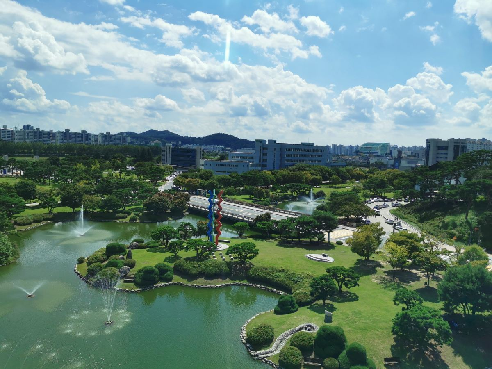

05 / 2027 GÜZ LİSANS BAŞVURULARI
SON BAŞVURU
14
OCAK
2027
KAIST ADMISSIONS · 정규 전형
BAŞVURU AÇILIŞI10 KASIM 2026
SON SAAT · TÜRKİYE12.00
GÜNEY KORE'DE LİSANS EĞİTİMİ
KAIST BAŞVURUNUBİRLİKTE PLANLAYALIM.
Uluslararası lisans · Güz 2027. Referans mektubu için ayrı teslim tarihini kontrol et. Kaynak: KAIST Admissions.